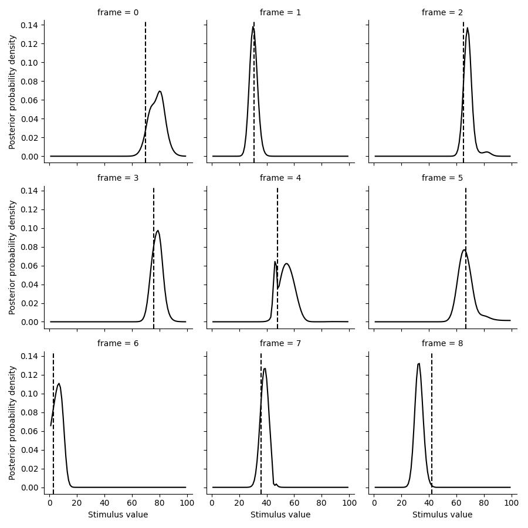
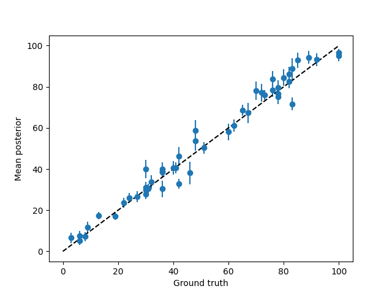
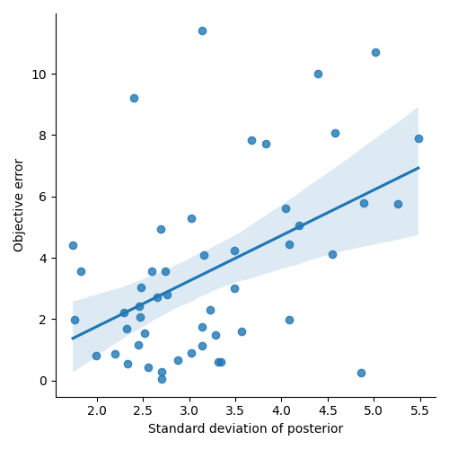
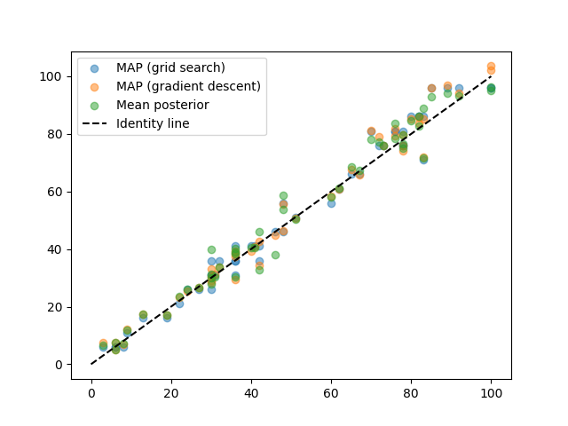

Note
Go to the end to download the full example code.
Decoding of stimuli from neural data¶
- Here we will simulate neural data given a ground truth encoding model
and try to decode the stimulus from the data.
# Set up a neural model
from braincoder.models import GaussianPRF
import numpy as np
import pandas as pd
import scipy.stats as ss
# Set up 100 random of PRF parameters
n = 20
n_trials = 50
noise = 1.
mu = np.random.rand(n) * 100
sd = np.random.rand(n) * 45 + 5
amplitude = np.random.rand(n) * 5
baseline = np.random.rand(n) * 2 - 1
parameters = pd.DataFrame({'mu':mu, 'sd':sd, 'amplitude':amplitude, 'baseline':baseline})
# We have a paradigm of random numbers between 0 and 100
paradigm = np.ceil(np.random.rand(n_trials) * 100)
model = GaussianPRF(parameters=parameters)
data = model.simulate(paradigm=paradigm, noise=noise)
# Now we fit back the PRF parameters
from braincoder.optimize import ParameterFitter, ResidualFitter
fitter = ParameterFitter(model, data, paradigm)
mu_grid = np.arange(0, 100, 5)
sd_grid = np.arange(5, 50, 5)
grid_pars = fitter.fit_grid(mu_grid, sd_grid, [1.0], [0.0], use_correlation_cost=True, progressbar=False)
grid_pars = fitter.refine_baseline_and_amplitude(grid_pars)
for par in ['mu', 'sd', 'amplitude', 'baseline']:
print(f'Correlation grid-fitted parameter and ground truth for *{par}*: {ss.pearsonr(grid_pars[par], parameters[par])[0]:0.2f}')
gd_pars = fitter.fit(init_pars=grid_pars, progressbar=False)
for par in ['mu', 'sd', 'amplitude', 'baseline']:
print(f'Correlation gradient descent-fitted parameter and ground truth for *{par}*: {ss.pearsonr(grid_pars[par], parameters[par])[0]:0.2f}')
Working with chunk size of 666666
Using correlation cost!
0%| | 0/1 [00:00<?, ?it/s]
100%|██████████| 1/1 [00:00<00:00, 39.22it/s]
Correlation grid-fitted parameter and ground truth for *mu*: 0.74
Correlation grid-fitted parameter and ground truth for *sd*: 0.39
Correlation grid-fitted parameter and ground truth for *amplitude*: 0.63
Correlation grid-fitted parameter and ground truth for *baseline*: 0.49
*** Fitting: ***
* mu
* sd
* amplitude
* baseline
Number of problematic voxels (mask): 0
Number of voxels remaining (mask): 20
Correlation gradient descent-fitted parameter and ground truth for *mu*: 0.74
Correlation gradient descent-fitted parameter and ground truth for *sd*: 0.39
Correlation gradient descent-fitted parameter and ground truth for *amplitude*: 0.63
Correlation gradient descent-fitted parameter and ground truth for *baseline*: 0.49
# Now we fit the covariance matrix
stimulus_range = np.arange(1, 100).astype(np.float32)
model.init_pseudoWWT(stimulus_range=stimulus_range, parameters=gd_pars)
resid_fitter = ResidualFitter(model, data, paradigm, gd_pars)
omega, dof = resid_fitter.fit(progressbar=False)
init_tau: 0.7504714727401733, 1.1250208616256714
USING A PSEUDO-WWT!
WWT max: 2172.763916015625
# Now we simulate unseen test data:
test_paradigm = np.ceil(np.random.rand(n_trials) * 100)
test_data = model.simulate(paradigm=test_paradigm, noise=noise)
# And decode the test paradigm
posterior = model.get_stimulus_pdf(test_data, stimulus_range, model.parameters, omega=omega, dof=dof)
# Rename the row index so it doesn't clash with the column index (both default to 'stimulus')
posterior.index.name = 'frame'
# Finally, we make some plots to see how well the decoder did
import matplotlib.pyplot as plt
import seaborn as sns
tmp = posterior.set_index(pd.Series(test_paradigm, name='ground truth'), append=True).loc[:8].stack().to_frame('p')
g = sns.FacetGrid(tmp.reset_index(), col='frame', col_wrap=3)
g.map(plt.plot, 'stimulus', 'p', color='k')
def test(data, **kwargs):
plt.axvline(data.mean(), c='k', ls='--', **kwargs)
g.map(test, 'ground truth')
g.set(xlabel='Stimulus value', ylabel='Posterior probability density')

<seaborn.axisgrid.FacetGrid object at 0x177cdc920>
# Let's look at the summary statistics of the posteriors posteriors
def get_posterior_stats(posterior, normalize=True):
posterior = posterior.copy()
posterior = posterior.div(np.trapezoid(posterior, posterior.columns,axis=1), axis=0)
# Take integral over the posterior to get to the expectation (mean posterior)
E = np.trapezoid(posterior*posterior.columns.values[np.newaxis,:], posterior.columns, axis=1)
# Take the integral over the posterior to get the expectation of the distance to the
# mean posterior (i.e., standard deviation)
sd = np.trapezoid(np.abs(E[:, np.newaxis] - posterior.columns.astype(float).values[np.newaxis, :]) * posterior, posterior.columns, axis=1)
stats = pd.DataFrame({'E':E, 'sd':sd}, index=posterior.index)
return stats
posterior_stats = get_posterior_stats(posterior)
# Let's see how far the posterior mean is from the ground truth
plt.errorbar(test_paradigm, posterior_stats['E'],posterior_stats['sd'], fmt='o',)
plt.plot([0, 100], [0,100], c='k', ls='--')
plt.xlabel('Ground truth')
plt.ylabel('Mean posterior')
# Let's see how the error depends on the standard deviation of the posterior
error = test_paradigm - posterior_stats['E']
error_abs = np.abs(error)
error_abs.name = 'error'
sns.lmplot(x='sd', y='error', data=posterior_stats.join(error_abs))
plt.xlabel('Standard deviation of posterior')
plt.ylabel('Objective error')


Text(29.0, 0.5, 'Objective error')
# Now, let's try to find the MAP estimate using gradient descent
from braincoder.optimize import StimulusFitter
stimulus_fitter = StimulusFitter(model=model, data=test_data, omega=omega)
# We start with a very coarse grid search, so we are sure we are in the right ballpark
estimated_stimuli_grid = stimulus_fitter.fit_grid(np.arange(1, 100, 5))
# We can then refine the estimate using gradient descent
estimated_stimuli_gd = stimulus_fitter.fit(init_pars=estimated_stimuli_grid, progressbar=False)
# Let's see how well we did
plt.scatter(test_paradigm, estimated_stimuli_grid, alpha=.5, label='MAP (grid search)')
plt.scatter(test_paradigm, estimated_stimuli_gd, alpha=.5, label='MAP (gradient descent)')
plt.scatter(test_paradigm, posterior_stats['E'], alpha=.5, label='Mean posterior')
plt.plot([0, 100], [0,100], c='k', ls='--', label='Identity line')
plt.legend()
# %%

0%| | 0/1000 [00:00<?, ?it/s]
0%| | 1/1000 [00:00<02:13, 7.49it/s]
3%|▎ | 30/1000 [00:00<00:06, 153.18it/s]
6%|▌ | 59/1000 [00:00<00:04, 208.62it/s]
9%|▉ | 89/1000 [00:00<00:03, 241.05it/s]
12%|█▏ | 118/1000 [00:00<00:03, 257.76it/s]
15%|█▍ | 148/1000 [00:00<00:03, 268.75it/s]
18%|█▊ | 176/1000 [00:00<00:03, 259.34it/s]
20%|██ | 203/1000 [00:00<00:03, 252.49it/s]
23%|██▎ | 229/1000 [00:00<00:03, 253.14it/s]
26%|██▌ | 256/1000 [00:01<00:02, 256.72it/s]
28%|██▊ | 282/1000 [00:01<00:02, 244.50it/s]
31%|███ | 307/1000 [00:01<00:02, 243.78it/s]
33%|███▎ | 333/1000 [00:01<00:02, 245.90it/s]
36%|███▌ | 358/1000 [00:01<00:02, 245.42it/s]
38%|███▊ | 383/1000 [00:01<00:02, 246.34it/s]
41%|████ | 408/1000 [00:01<00:02, 246.38it/s]
43%|████▎ | 433/1000 [00:01<00:02, 214.08it/s]
46%|████▌ | 456/1000 [00:02<00:02, 189.49it/s]
48%|████▊ | 482/1000 [00:02<00:02, 206.16it/s]
51%|█████ | 511/1000 [00:02<00:02, 226.67it/s]
54%|█████▍ | 538/1000 [00:02<00:01, 237.92it/s]
56%|█████▋ | 565/1000 [00:02<00:01, 245.65it/s]
59%|█████▉ | 593/1000 [00:02<00:01, 254.52it/s]
62%|██████▏ | 621/1000 [00:02<00:01, 261.07it/s]
65%|██████▌ | 650/1000 [00:02<00:01, 268.60it/s]
68%|██████▊ | 680/1000 [00:02<00:01, 276.28it/s]
71%|███████ | 710/1000 [00:02<00:01, 281.93it/s]
74%|███████▍ | 740/1000 [00:03<00:00, 287.20it/s]
77%|███████▋ | 769/1000 [00:03<00:00, 287.68it/s]
80%|███████▉ | 798/1000 [00:03<00:00, 263.55it/s]
82%|████████▎ | 825/1000 [00:03<00:00, 252.78it/s]
85%|████████▌ | 853/1000 [00:03<00:00, 259.05it/s]
88%|████████▊ | 880/1000 [00:03<00:00, 258.67it/s]
91%|█████████ | 909/1000 [00:03<00:00, 266.10it/s]
94%|█████████▎| 937/1000 [00:03<00:00, 269.42it/s]
97%|█████████▋| 967/1000 [00:03<00:00, 275.81it/s]
100%|█████████▉| 995/1000 [00:03<00:00, 276.50it/s]
100%|██████████| 1000/1000 [00:04<00:00, 249.52it/s]
<matplotlib.legend.Legend object at 0x17972b230>
Total running time of the script: (0 minutes 32.790 seconds)